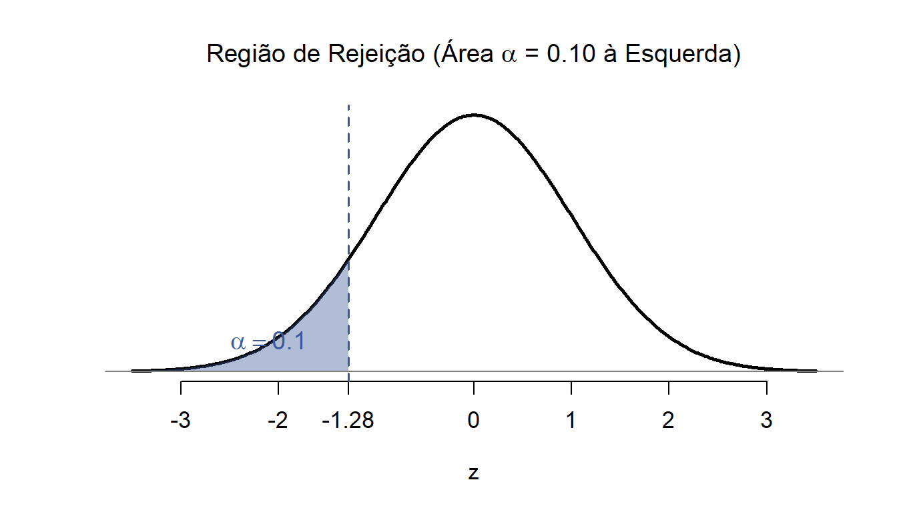
Testes de Hipóteses
Nátaly A. J. Monroy
LECON/DEST - UFES
1 Testes de Hipóteses
3 Testes de Hipóteses
Definição
Seja \(\theta\) um parâmetro populacional associado a uma v.a. \(X\). Uma hipótese é qualquer afirmação feita com relação a \(\theta\) que pode ser submetida a teste.
Observação
Seja \(\theta\) um parâmetro populacional. Os exemplos mais usuais de hipóteses com respeito a \(\theta\) são:
- Simples: \(\theta = \theta_0\);
- Compostas:
- \(\theta \geq \theta_0\) e \(\theta > \theta_0\) (unilateral);
- \(\theta \leq \theta_0\) e \(\theta < \theta_0\) (unilateral); e
- \(\theta \neq \theta_0\) (bilateral).
3 Testes de Hipóteses
Definição
Para realizar um teste de hipóteses estatístico devemos estabelecer corretamente as hipóteses:
- Nula: é aquela que será submetida a teste. Pode ser, ou não, rejeitada; e
- Alternativa: é aquela que é aceita quando rejeitamos \(H_0\).
Observações
- As hipóteses nula e alternativa serão denotadas por \(H_0\) e \(H_1\), respectivamente;
- As hipóteses \(H_0\) e \(H_1\) devem ser escolhidas de modo que sejam mutuamente excludentes;
- Geralmente, mas nem sempre, \(H_1\) é escolhida como o complementar de \(H_0\).
Definição
Um teste de hipóteses é o procedimento de tomada de decisão sobre rejeitar, ou não, \(H_0\).
3 Testes de Hipóteses
Problema
Como construir um procedimento para testar entre \(H_0\) e \(H_1\)?
Observações
- Uma das formas consiste de escolher um estimador \(\hat{\theta}\) do parâmetro \(\theta\);
- A partir de \(\hat{\theta}\), o próximo passo é estabelecer a Região Crítica (RC) do teste.
Definição
No contexto acima, a RC de um teste de hipóteses é um conjunto de valores que, se fornecidos pelo estimador, levam à rejeição de \(H_0\). Formalmente, \[ \text{RC} = \{x : \text{se } \hat{\theta} = x, H_0 \text{ é rejeitada}\}. \]
3 Testes de Hipóteses
Exemplo 11: Suponha que desejamos testar \(H_0 : \mu \geq \mu_0\). Uma RC natural para rejeitar \(H_0\) seria \(RC = \{\bar{X} < x_c\}\). Isto é, valores muito pequenos de \(\bar{X}\) suportam a rejeição de \(H_0\). Determinada a forma da RC, resta determinar o valor crítico \(x_c\), o limiar que delimita a RC.
Observações
- Decidir entre rejeitar, ou não, \(H_0\) pode acarretar em dois tipos de erros: o Erro Tipo 1 (rejeitar \(H_0\), quando \(H_0\) é verdadeira); e o Erro Tipo 2 (não rejeitar \(H_0\), quando \(H_0\) é falsa);
- Como a decisão se baseia em um estimador, ela é aleatória e, portanto, podemos atribuir probabilidades a cada tipo de erro:
- \(P(\text{Erro Tipo 1}) = P(\text{Rejeitar } H_0 \mid H_0 \text{ é verdadeira}) := \alpha(\theta)\);
- \(P(\text{Erro Tipo 2}) = P(\text{Não Rejeitar } H_0 \mid H_0 \text{ é falsa}) := \beta(\theta)\).
Definição
As funções \(\alpha(\theta)\) e \(1 - \beta(\theta)\) são denominadas de tamanho e poder do teste.
Exemplo 12
Contextualização: Uma indústria utiliza um parafuso que deve satisfazer determinadas especificações. Uma dessas é a resistência à tração \(X\) (em \(\text{kg}/\text{m}^2\)). Dependendo da localidade em que os parafusos são fabricados, \(X\) pode ter diferentes distribuições. Suponha que apenas as localidades \(A\) e \(B\) produzam os parafusos. Se o parafuso vem:
- de \(A\), então \(E(X) = 145\) e \(\sigma^2 = 12^2\);
- de \(B\), então \(E(X) = 155\) e \(\sigma^2 = 18^2\).
Formulação do Teste: Um lote grande de parafusos será leiloado e a empresa deseja comprar esse lote somente se o mesmo vier da localidade \(B\). No dia do leilão, o leiloeiro divulgará a resistência à tração média de \(36\) parafusos escolhidos desse lote. Podemos estabelecer as hipóteses nula e alternativa como sendo: \[ H_0 : \mu = 155, \sigma = 18 \quad \times \quad H_1 : \mu = 145, \sigma = 12. \]
Se decidirmos rejeitar \(H_0\) quando \(\bar{X} < 150\), quais as probabilidades de cometermos os Erros Tipos 1 e 2?
Exemplo 12 (cont.)
Como neste caso \(H_0\) e \(H_1\) são ambas hipóteses simples, as probabilidades de erro \(\alpha = \alpha(\mu = 155, \sigma = 18)\) e \(\beta = \beta(\mu = 145, \sigma = 12)\) são de fácil obtenção.
De um lado, a probabilidade do Erro Tipo 1 (tamanho do teste) é \[ \begin{aligned} \alpha &= P(\text{Erro Tipo 1}) \\ &= P(\text{Rejeitar } H_0 \mid H_0 \text{ é verdadeira}) \\ &= P(\bar{X} < 150 \mid \mu = 155, \sigma = 18) \\ &= P\left(\frac{\bar{X} - \mu}{\sigma/\sqrt{n}} < \frac{150 - 155}{18/\sqrt{36}}\right) \\ &\approx P(Z < -1\text{,}67) = 0\text{,}0475 \end{aligned} \]
Por outro lado, a probabilidade do Erro Tipo 2 (\(1 -\) poder do teste) é \[ \begin{aligned} \beta &= P(\text{Erro Tipo 2}) \\ &= P(\text{Não Rejeitar } H_0 \mid H_0 \text{ é falsa}) \\ &= P(\bar{X} \geq 150 \mid \mu = 145, \sigma = 12) \\ &= P\left(\frac{\bar{X} - \mu}{\sigma/\sqrt{n}} \geq \frac{150 - 145}{12/\sqrt{36}}\right) \\ &\approx P(Z \geq 2\text{,}5) = 0\text{,}0062 \end{aligned} \]
Embora tenhamos fixado a RC e depois verificado \(\alpha\) e \(\beta\), o usual é especificar um \(\alpha\) tolerável e encontrar a RC cuja probabilidade de Erro Tipo 1 satisfaz esse valor.
Exemplo 12 (cont.)
Primeiramente, determinamos o formato da RC. Teremos evidências para rejeitar \(H_0 : \mu = 155\) em favor de \(H_1 : \mu = 145\) se \(\bar{X}\) for “suficientemente” menor do que \(155\), isto é, se \(\bar{X} < x_c\), para algum \(x_c < 155\).
Especificada \(\text{RC} = \{\bar{X} < x_c\}\), encontramos o “valor crítico” \(x_c\) cuja probabilidade de Erro Tipo 1 não supere o nível tolerado \(\alpha\). Suponha \(\alpha = 0\text{,}1\). Daí, \[ \begin{aligned} \alpha &= 0\text{,}1 = P(\text{Erro Tipo 1}) = P(\text{Rejeitar } H_0 \mid H_0 \text{ é verdadeira}) \\ &= P(\bar{X} < x_c \mid \mu = 155, \sigma = 18) = \textstyle P\left(\frac{\bar{X} - \mu}{\sigma/\sqrt{n}} < \frac{x_c - 155}{18/\sqrt{36}}\right) \\ &\approx \textstyle P\left(Z < \frac{x_c - 155}{3}\right) = P(Z < z), \end{aligned} \] onde \(z = \frac{x_c - 155}{3}\). Logo, \(\frac{x_c - 155}{3} = z = -1\text{,}28 \implies x_c = 151\text{,}16\).
Exercício
Encontre \(\beta\) para a RC obtida acima.
3 Testes de Hipóteses
Observações
- No exemplo anterior, como \(H_0\) e \(H_1\) eram simples, as probabilidades de Erros Tipos 1 e 2 possuiam apenas um valor admissível e puderam ser calculadas de maneira exata;
- No entanto, se uma das hipóteses é composta (\(H_0 : \theta \leq \theta_0\), por exemplo), a probabilidade do erro associado é uma função do verdadeiro valor do parâmetro;
- Neste caso, optamos por ser conservadores, limitando o máximo das probabilidades de Erro Tipo 1.
Definição
O nível de significância de um teste de hipóteses é definido como o valor máximo tolerado para a probabilidade do Erro Tipo 1. Mais precisamente, é o valor tolerado para \(\sup_{\theta} \alpha(\theta)\).
Propriedade
Se o tamanho do teste \(\alpha(\theta)\) for função monótona de \(\theta\), então \(\sup_{\theta} \alpha(\theta) = \alpha(\theta_0)\) para qualquer dos formatos de hipótese nula a seguir: \(H_0 : \theta = \theta_0\); \(H_0 : \theta \leq \theta_0\); e \(H_0 : \theta \geq \theta_0\).
3 Testes de Hipóteses
Observações
- Ao lado é ilustrado o tamanho \(\alpha(\theta)\) de um teste com comportamento monótono;
- Note que \(\alpha(\theta)\) (área à direita de \(x_c\)) cresce conforme o verdadeiro \(\theta\) se aproxima do limite da hipótese nula (em \(\theta_0\));
- O supremo é alcançado exatamente em \(\theta = \theta_0\).
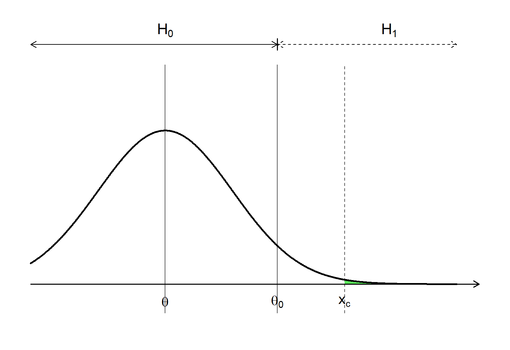
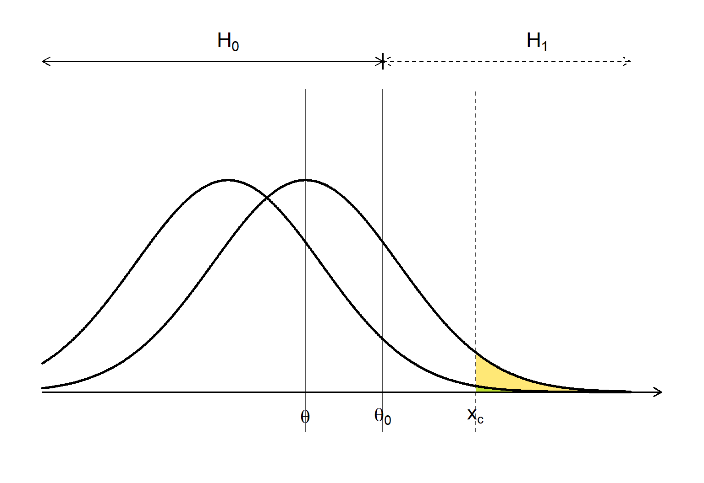
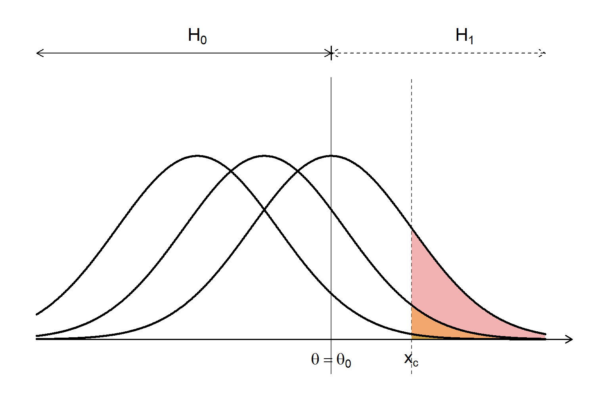
3 Testes de Hipóteses
Observações
- O teste de hipóteses é realizado pela construção de uma RC (critério para rejeitar \(H_0\)) que satisfaça o nível de significância (\(\sup_\theta\alpha(\theta)\));
- Como normalmente \(\sup_\theta\alpha(\theta) = \alpha(\theta_0)\), \(H_0\) sempre deve conter o ponto limítrofe (\(\theta_0\));
-
O nível de significância pode ser interpretado como um trade-off entre \(\alpha\) e \(\beta\), pois:
- \(\uparrow \alpha(\theta) = P(\text{Erro Tipo 1}) \implies \downarrow \beta(\theta) = P(\text{Erro Tipo 2})\)
- \(\downarrow \alpha(\theta) = P(\text{Erro Tipo 1}) \implies \uparrow \beta(\theta) = P(\text{Erro Tipo 2})\)
- Se o custo do Erro Tipo 1 for mais alto que o do Erro Tipo 2, adotamos um nível de significância baixo;
- Se o custo do Erro Tipo 1 for mais baixo que o do Erro Tipo 2, devemos adotar um nível de significância alto (para indiretamente diminuir \(\beta\));
- Normalmente, só é possível reduzir \(\alpha(\theta)\) e \(\beta(\theta)\) simultaneamente aumentando o tamanho amostral;
- Depois de fixado o nível de significância e obtida a RC, se \(H_1\) é composta, \(\beta\) não possui um valor único e deve ser tratada como função de \(\theta\).
3 Testes de Hipóteses
Observações
Em linhas gerais, as etapas de um Teste de Hipóteses são:
- Estabelecer \(H_0\) e \(H_1\);
- Observar o comportamento de \(H_1\) e determinar o “formato” apropriado da RC;
- Fixar o nível de significância \(\sup_\theta\alpha(\theta)\);
- Determinar a RC correspondente ao nível de significância estabelecido;
- Verificar se a estimativa fornecida por \(\hat{\theta}\) pertence à RC (o que nos leva a rejeitar \(H_0\) ao nível de significância fixado). Se \(\hat{\theta}\) não pertencer à RC, concluímos que a amostra não forneceu evidências suficientes para a rejeição de \(H_0\).
- Por que não podemos dizer que “aceitamos” \(H_0\)? Pois não sabemos a probabilidade de erro ao fazermos tal afirmação!
1.1 Teste para \(\mu\)
Observações
- Um dos parâmetros de maior interesse prático é a média \(\mu\) de uma população;
-
Podemos considerar as seguintes configurações clássicas de hipóteses a serem testadas:
- \(H_0 : \mu \leq \mu_0 \quad \times \quad H_1 : \mu > \mu_0\) (Unilateral à direita)
- \(H_0 : \mu \geq \mu_0 \quad \times \quad H_1 : \mu < \mu_0\) (Unilateral à esquerda)
- \(H_0 : \mu = \mu_0 \quad \times \quad H_1 : \mu \neq \mu_0\) (Bilateral)
- Nas hipóteses acima, \(\mu\) representa o parâmetro populacional (desconhecido), enquanto \(\mu_0\) representa um valor numérico de referência (conhecido)
3.1 Teste para \(\mu\)
Observações
Caso 1: Suponha que desejamos testar as hipóteses: \[H_0 : \mu \leq \mu_0 \quad \times \quad H_1 : \mu > \mu_0\]
- Podemos utilizar a média amostral \(\bar{X}\) para construir a RC;
- Perceba que, se \(\bar{X}\) fornecer um valor muito maior que \(\mu_0\), teremos fortes evidências para rejeitar \(H_0\) em favor de \(H_1\).
- O valor crítico \(x_c\) é o ponto que determina o que é muito maior do que \(\mu_0\).
- Portanto, \(\text{RC} = \{\bar{X} > x_c\}\);
- Como determinar \(x_c\)?
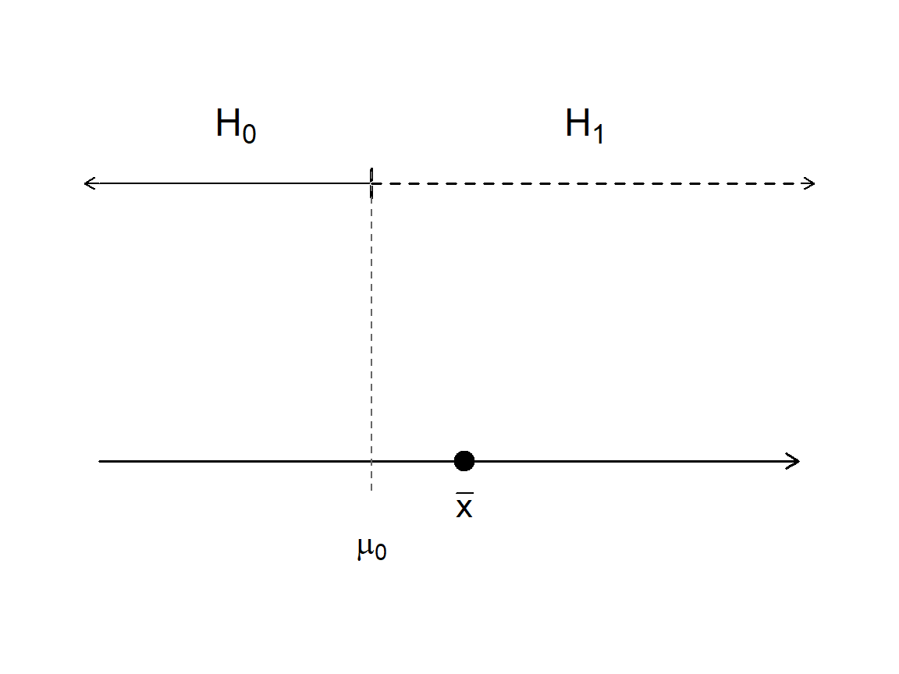
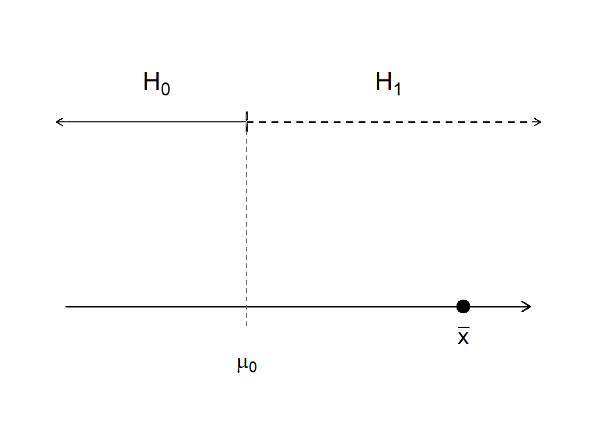
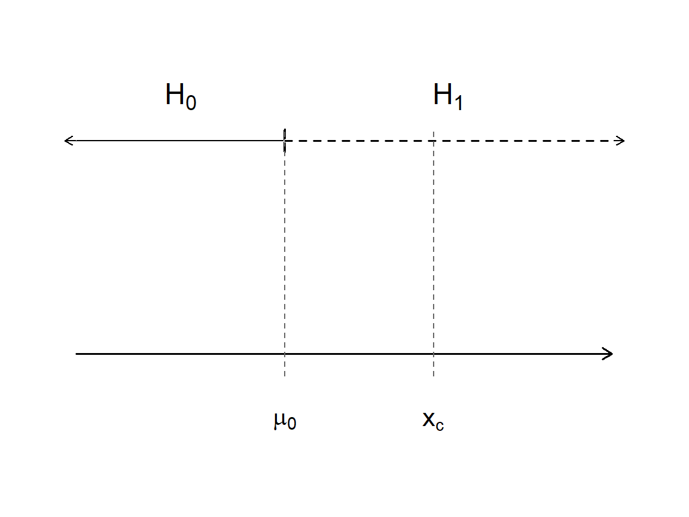
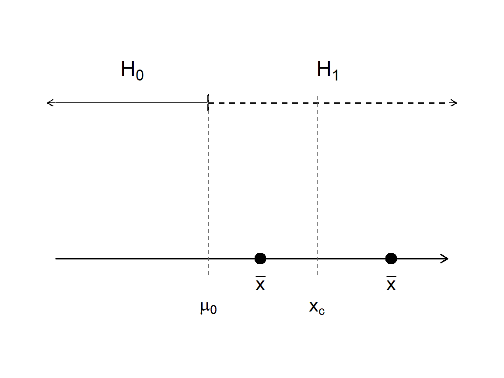
3.1 Teste para \(\mu\)
Observação
Fixemos o nível de significância em \(\alpha\) e seja \(z_{\alpha}\) o valor tal que \(P(Z > z_{\alpha}) = \alpha\). Pelo TCL, vem que \[ \begin{aligned} \alpha &= \sup \alpha(\mu) = \alpha(\mu_0) = P(\text{Rejeitar } H_0 \mid \mu = \mu_0) \\ &= \textstyle P(\bar{X} > x_c \mid \mu = \mu_0) = P\left( \frac{\bar{X} - \mu_0}{\sigma/\sqrt{n}} > \frac{x_c - \mu_0}{\sigma/\sqrt{n}} \right) \\ &\approx \textstyle P\left( Z > \frac{x_c - \mu_0}{\sigma/\sqrt{n}} \right). \end{aligned} \]
Logo, \(\frac{x_c - \mu_0}{\sigma/\sqrt{n}} = z_{\alpha}\), isto é, \(x_c = \mu_0 + z_{\alpha} \frac{\sigma}{\sqrt{n}}\). Assim, rejeitamos \(H_0\) ao nível de significância \(\alpha\) se \[ \textstyle \bar{X} > \mu_0 + z_{\alpha} \frac{\sigma}{\sqrt{n}}. \]
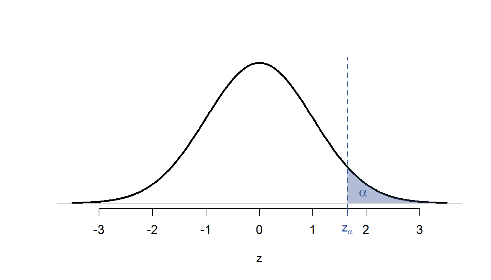
3.1 Teste para \(\mu\)
Observações
Caso 2: Suponha que desejamos testar as hipóteses: \[H_0 : \mu \geq \mu_0 \quad \times \quad H_1 : \mu < \mu_0\]
- Podemos utilizar a média amostral \(\bar{X}\) para construir a RC;
- Perceba que, se \(\bar{X}\) fornecer um valor muito menor que \(\mu_0\), teremos fortes evidências para rejeitar \(H_0\) em favor de \(H_1\).
- O valor crítico \(x_c\) é o ponto que determina o que é muito menor do que \(\mu_0\).
- Portanto, \(\text{RC} = \{\bar{X} < x_c\}\);
- Como determinar \(x_c\)?
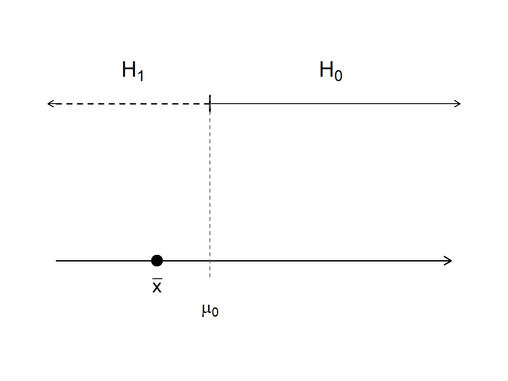
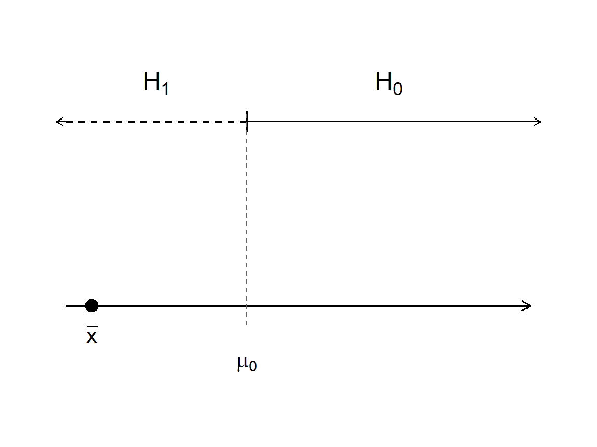
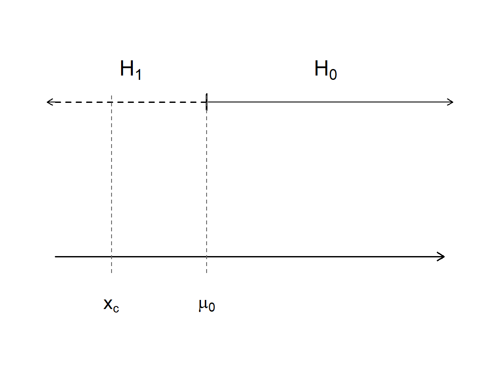
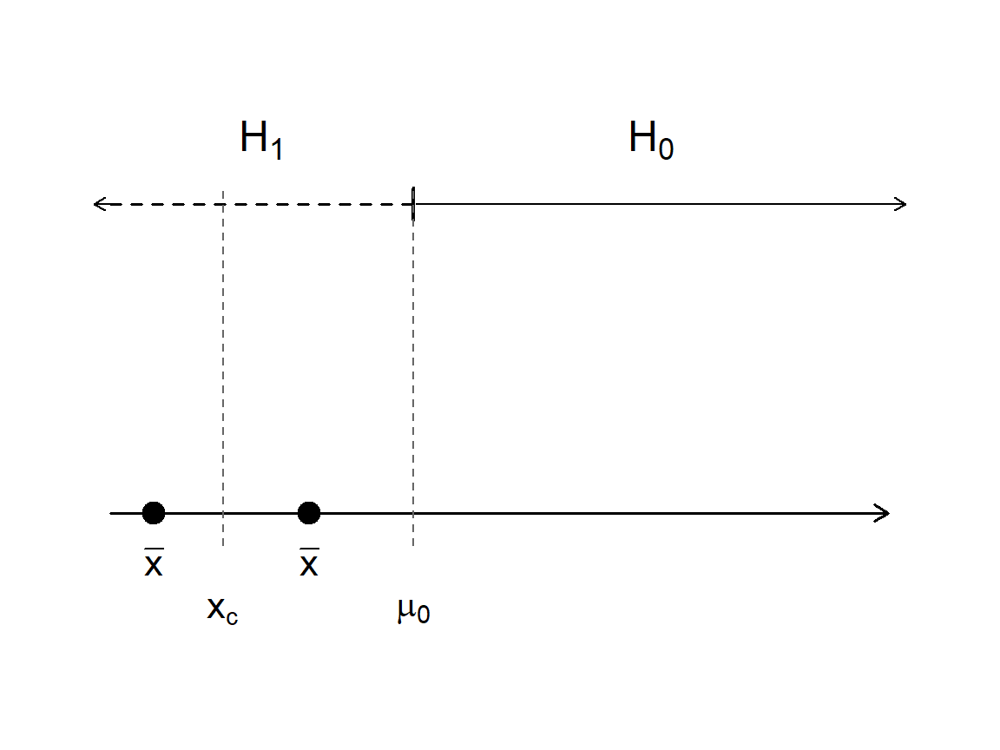
3.1 Teste para \(\mu\)
Observação
Para uma significância \(\alpha\) e \(z_{\alpha}\) tal que \(P(Z > z_{\alpha}) = \alpha\), temos \(P(Z < -z_\alpha) = \alpha\). Pelo TCL, vem que \[\begin{aligned} \alpha &= \sup \alpha(\mu) = \alpha(\mu_0) = P(\text{Rejeitar } H_0 \mid \mu = \mu_0) \\ &= \textstyle P(\bar{X} < x_c \mid \mu = \mu_0) = P\left( \frac{\bar{X} - \mu_0}{\sigma/\sqrt{n}} < \frac{x_c - \mu_0}{\sigma/\sqrt{n}} \right) \\ &\approx \textstyle P\left( Z < \frac{x_c - \mu_0}{\sigma/\sqrt{n}} \right). \end{aligned} \]
Logo, \(\frac{x_c - \mu_0}{\sigma/\sqrt{n}} = -z_{\alpha}\), isto é, \(x_c = \mu_0 - z_{\alpha} \frac{\sigma}{\sqrt{n}}\). Assim, rejeitamos \(H_0\) ao nível de significância \(\alpha\) se \[ \textstyle \bar{X} < \mu_0 - z_{\alpha} \frac{\sigma}{\sqrt{n}}. \]

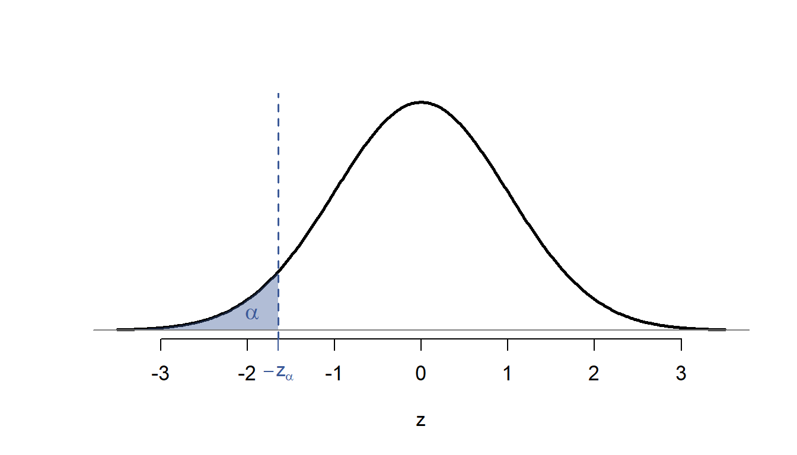
3.1 Teste para \(\mu\)
Observações
Caso 3: Suponha que desejamos testar as hipóteses: \[H_0 : \mu = \mu_0 \quad \times \quad H_1 : \mu \neq \mu_0\]
- Vamos utilizar a média amostral \(\bar{X}\) para construir a RC;
- Perceba que, se \(\bar{X}\) fornecer um valor muito diferente (muito menor ou maior) que \(\mu_0\), teremos fortes evidências para rejeitar \(H_0\) em favor de \(H_1\).
- Os valores críticos \(x_{c_1}\) e \(x_{c_2}\) delimitam o que é muito menor ou maior do que \(\mu_0\).
- Portanto, \(\text{RC} = \{(\bar{X} < x_{c_1}) \cup (\bar{X} > x_{c_2})\}\);
- Como determinar \(x_{c_1}\) e \(x_{c_2}\)?
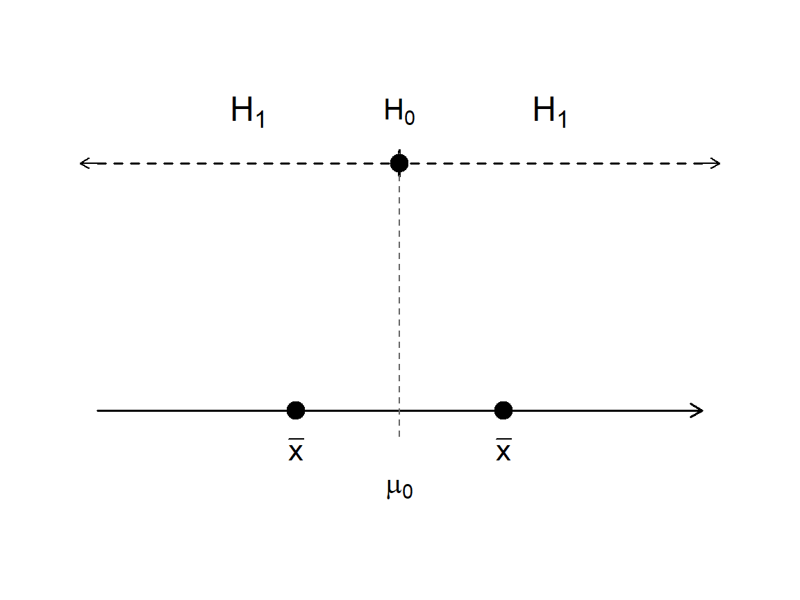
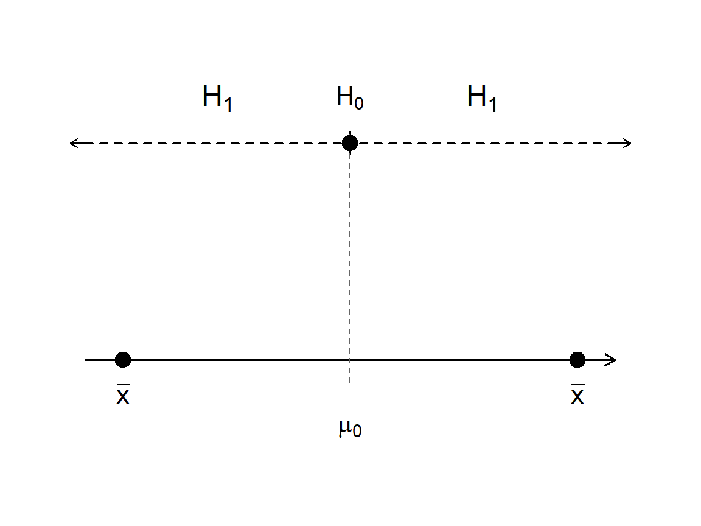
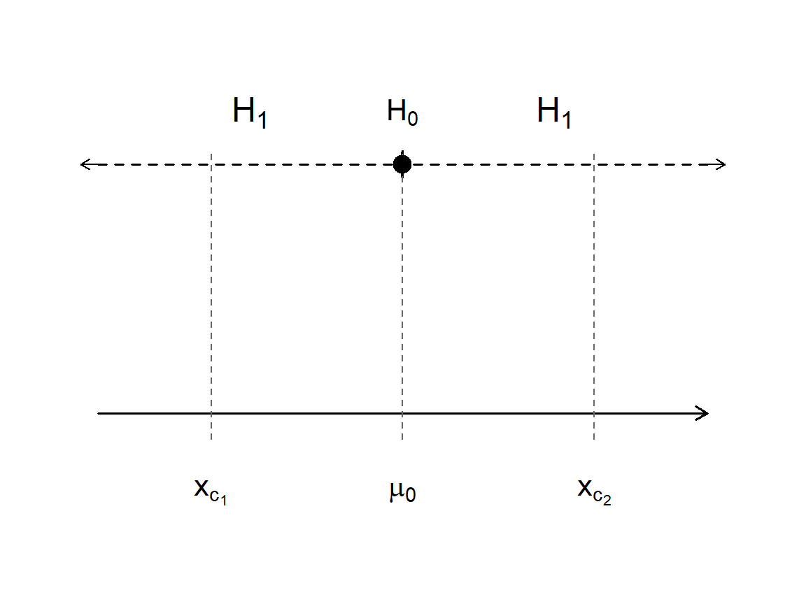
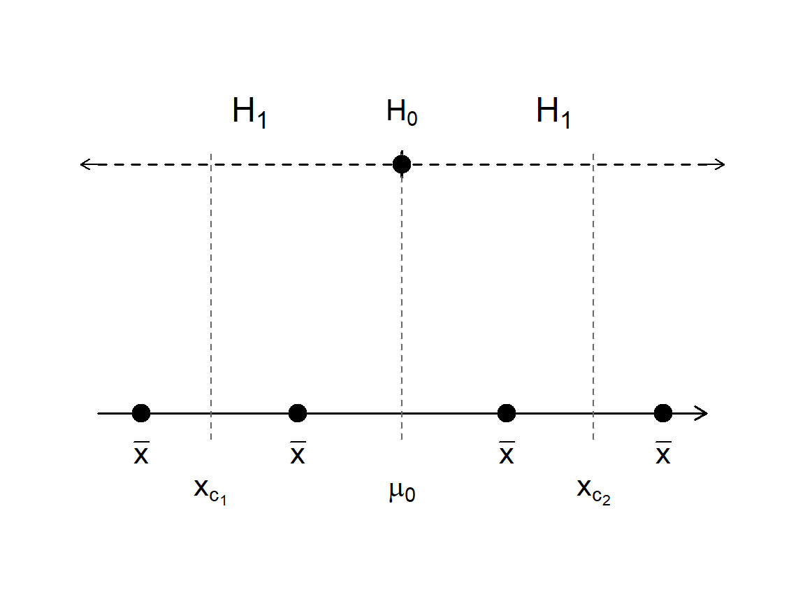
3.1 Teste para \(\mu\)
Observação
Com significância \(\alpha\) e sendo \(z_{\alpha}\) tal que \(P(Z > z_{\alpha}) = \alpha\), temos \(P(Z < -z_\alpha) = \alpha\). Do TCL, vem \[\begin{aligned} \alpha &= \sup \alpha(\mu) = \alpha(\mu_0) = P(\text{Rejeitar } H_0 \mid \mu = \mu_0) \\ &= \textstyle P\left[(\bar{X} < x_{c_1}) \cup (\bar{X} > x_{c_2}) \mid \mu = \mu_0 \right]\\ &= \textstyle P\left( \frac{\bar{X} - \mu_0}{\sigma/\sqrt{n}} < \frac{x_{c_1} - \mu_0}{\sigma/\sqrt{n}} \right) + P\left( \frac{\bar{X} - \mu_0}{\sigma/\sqrt{n}} > \frac{x_{c_2} - \mu_0}{\sigma/\sqrt{n}} \right) \\ &\approx \textstyle P\left( Z < \frac{x_{c_1} - \mu_0}{\sigma/\sqrt{n}} \right) + P\left( Z > \frac{x_{c_2} - \mu_0}{\sigma/\sqrt{n}} \right). \end{aligned} \] Dividindo \(\alpha\) igualmente, vem \(\frac{x_{c_1} - \mu_0}{\sigma/\sqrt{n}} = -z_{\frac{\alpha}{2}}\) e \(\frac{x_{c_2} - \mu_0}{\sigma/\sqrt{n}} = z_{\frac{\alpha}{2}}\). Assim, rejeitamos \(H_0\) ao nível \(\alpha\) se \[ \textstyle \bar{X} < x_{c_1} = \mu_0 - z_{\frac{\alpha}{2}} \frac{\sigma}{\sqrt{n}} \ \ \ \text{ou} \ \ \ \bar{X} > x_{c_2} = \mu_0 + z_{\frac{\alpha}{2}} \frac{\sigma}{\sqrt{n}}. \]
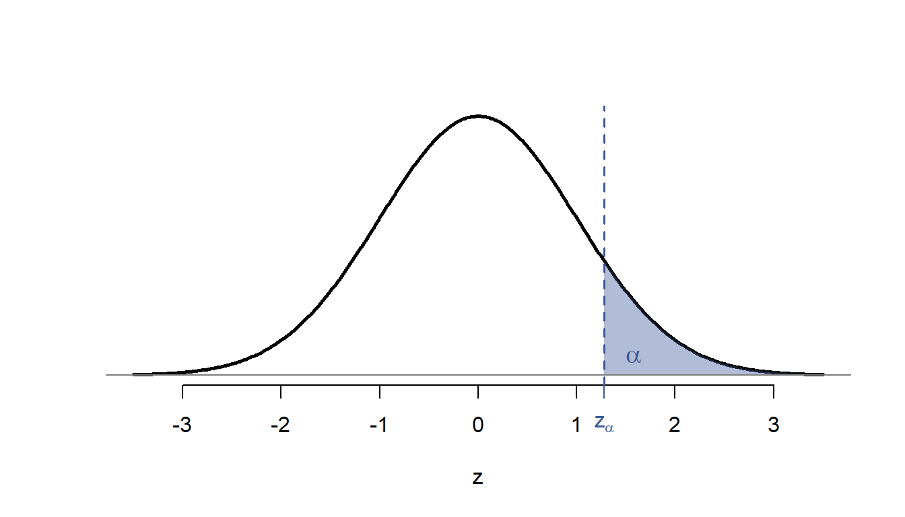
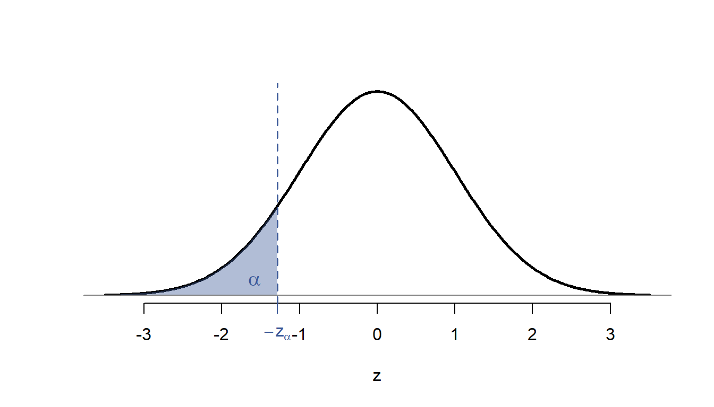
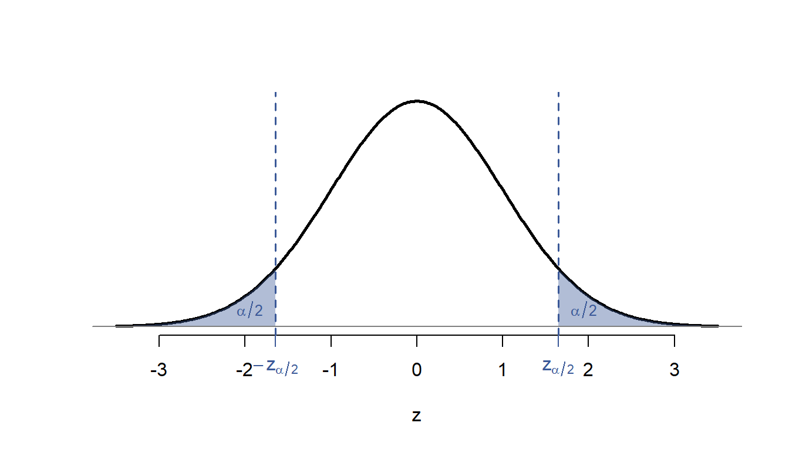
Exemplo 13
Contextualização: Os sistemas de escapamento de uma aeronave funcionam devido a um propelente sólido. A taxa de queima é uma característica importante desse produto.
Suponha que:
- as especificações exigem que a taxa de queima média seja de \(50 \text{ cm/s}\);
- de experiências anteriores, o desvio-padrão dessa variável pode ser tomado como \(\sigma = 2 \text{ cm/s}\);
- uma amostra de tamanho \(n = 25\) forneceu taxa média de queima de \(\bar{x} = 51\text{,}3 \text{ cm/s}\).
Pergunta
Quais conclusões podem ser tiradas ao nível de significância de \(\alpha = 0\text{,}05\)?
Exemplo 13 (cont.)
Teste bilateral: O problema nos leva a formular o teste das seguintes hipóteses: \[ H_0 : \mu = 50 \quad \times \quad H_1 : \mu \neq 50. \] Dados: Temos as seguintes informações: \(\bar{x} = 51\text{,}3\); \(\sigma = 2\); \(n = 25\); \(\alpha = 0\text{,}05\); e \(\mu_0 = 50\).
Solução: Como \(\alpha = 0\text{,}05\) e o teste é bilateral, temos \(z_{\frac{\alpha}{2}} = z_{0\text{,}025} = 1\text{,}96\). Por sua vez, os valores críticos são \[ \begin{aligned} x_{c_1} &= \mu_0 - z_{\frac{\alpha}{2}}\frac{\sigma}{\sqrt{n}} = 50 - 1\text{,}96\left(\frac{2}{\sqrt{25}}\right) = 50 - 1\text{,}96(0\text{,}4) = 49\text{,}216 \\ x_{c_2} &= \mu_0 + z_{\frac{\alpha}{2}}\frac{\sigma}{\sqrt{n}} = 50 + 1\text{,}96\left(\frac{2}{\sqrt{25}}\right) = 50 + 1\text{,}96(0\text{,}4) = 50\text{,}784 \end{aligned} \]
Decisão: Como \(\bar{x} = 51\text{,}3 > x_{c_2} = 50\text{,}784\), rejeitamos \(H_0\) ao nível de significância de \(5\%\).
3.1 Teste para \(\mu\)
| Hipótese Alternativa (\(H_1\)) | Região Crítica / Rejeitar \(H_0\) se: | Valor(es) Crítico(s) |
|---|---|---|
| \(H_1 : \mu > \mu_0\) (unilateral à direita) | \(\bar{X} > x_c\) | \(x_c = \mu_0 + z_{\alpha} \frac{\sigma}{\sqrt{n}}\) |
| \(H_1 : \mu < \mu_0\) (unilateral à esquerda) | \(\bar{X} < x_c\) | \(x_c = \mu_0 - z_{\alpha} \frac{\sigma}{\sqrt{n}}\) |
| \(H_1 : \mu \neq \mu_0\) (bilateral) | \(\bar{X} < x_{c_1}\) ou \(\bar{X} > x_{c_2}\) |
\(x_{c_1} = \mu_0 - z_{\frac{\alpha}{2}} \frac{\sigma}{\sqrt{n}}\) \(x_{c_2} = \mu_0 + z_{\frac{\alpha}{2}} \frac{\sigma}{\sqrt{n}}\) |
3.1 Teste para \(\mu\)
Observações
- Os testes para \(\mu\) se baseiam no TCL para aproximar a distribuição de \(\frac{\bar{X} - \mu}{\sigma/\sqrt{n}}\) pela normal padrão. O que faz com que o nível de significância \(\alpha\) seja aproximado no caso geral.
- No caso geral, é necessário \(n\) grande para uma aproximação satisfatória;
- Se a população for normal, a aproximação do TCL não é necessária e o nível de significância é exato, independente do tamanho amostral;
-
Se \(\sigma^2\) for desconhecida:
- e \(n\) for suficientemente grande, podemos substituir \(\sigma^2\) por \(S^2\), pois a consistência de \(S^2\) garante que a incerteza adicional provocada pela aproximação é negligenciável em grandes amostras;
- e \(n\) for pequeno, a incerteza adicional em substituir \(\sigma^2\) por \(S^2\) não pode ser desprezada.
Problema
O que fazer se \(\sigma^2\) for desconhecido e \(n\) for pequeno?
3.1 Teste para \(\mu\)
Propriedade
Como visto em Intervalos de Confiança, se \(n\) for pequeno e a população for normal, \(T = \frac{\bar{X} - \mu}{S/\sqrt{n}}\) tem distribuição \(t_{n-1}\). Nesse caso, definindo novamente \(t_{\alpha,\ \nu}\) como o valor tal que \(P(T > t_{\alpha,\ \nu}) = \alpha\) e seguindo os mesmos passos para \(\sigma^2\) conhecida, obtemos as seguintes RC e valores críticos correspondentes.
| Hipótese Alternativa (\(H_1\)) | Região Crítica / Rejeitar \(H_0\) se: | Valor(es) Crítico(s) |
|---|---|---|
| \(H_1 : \mu > \mu_0\) (unilateral à direita) | \(\bar{X} > x_c\) | \(x_c = \mu_0 + t_{\alpha,\ n-1} \frac{\sigma}{\sqrt{n}}\) |
| \(H_1 : \mu < \mu_0\) (unilateral à esquerda) | \(\bar{X} < x_c\) | \(x_c = \mu_0 - t_{\alpha,\ n-1} \frac{\sigma}{\sqrt{n}}\) |
| \(H_1 : \mu \neq \mu_0\) (bilateral) | \(\bar{X} < x_{c_1}\) ou \(\bar{X} > x_{c_2}\) |
\(x_{c_1} = \mu_0 - t_{\frac{\alpha}{2},\ n-1} \frac{\sigma}{\sqrt{n}}\) \(x_{c_2} = \mu_0 + t_{\frac{\alpha}{2},\ n-1} \frac{\sigma}{\sqrt{n}}\) |
3.1 Teste para \(\mu\)
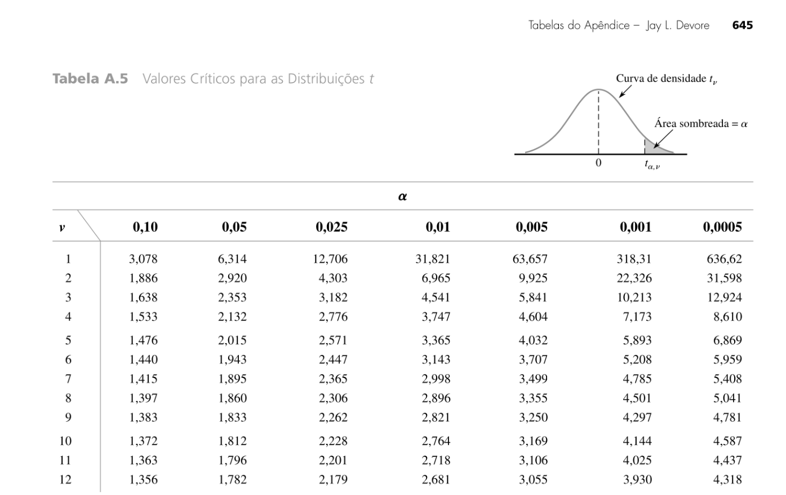
3.1 Teste para \(\mu\)
Observação
Se \(n\) for pequeno e a população não for normal, o TCL pode fornecer uma aproximação imprecisa. Nesse caso, podemos optar por testes Bootstrap (não abordados aqui) ou testes exatos.
Exemplo 10 (cont.): Vimos que \(\frac{n\bar{X}}{\mu} \sim \text{Gama}(n, 1)\) para população \(\text{Exp}(\lambda)\). Suponha que desejamos testar \[H_0 : \mu \leq \mu_0 \quad \times \quad H_1 : \mu > \mu_0.\]
Teremos evidências para rejeitar \(H_0\) se \(\bar{X}\) fornecer um valor significativamente maior do que \(\mu_0\), o que induz à \(\text{RC} = \{\bar{X} > x_c\}\). Agora, sendo \(g_{p,n}\) tal que \(P(\text{Gama}(n,1) \leq g_{p,n}) = p\), temos que \[ \textstyle \alpha = \sup_\mu\alpha(\mu) = \alpha(\mu_0) = P(\bar{X} > x_c | \mu = \mu_0) = P(\frac{n\bar{X}}{\mu_0} > \frac{nx_c}{\mu_0}) = P(\text{Gama}(n,1) > \frac{nx_c}{\mu_0}). \]
Isso implica em \(P(\text{Gama}(n,1) \leq \frac{nx_c}{\mu_0}) = 1-\alpha\), logo \(\frac{nx_c}{\mu_0} = g_{1-\alpha,n}\). Assim, rejeitamos \(H_0\) se \(\bar{X} > x_c = \frac{\mu_0}{n}g_{1-\alpha,n}\).
Exemplo 10 (cont.)
No mesmo exemplo, vimos que uma aa de \(n = 9\) bombas produziu \(\hat\lambda = 0\text{,}237\), o que equivale a \(\bar{X} = 1/\hat\lambda = 1/0\text{,}237 = 4\text{,}219\). Suponha que desejamos testar \[H_0 : \mu \leq 4 \quad \times \quad H_1 : \mu > 4.\]
Como discutido anteriormente, temos \(\text{RC} = \{\bar{X} > x_c\}\), onde \(x_c = \frac{\mu_0}{n}g_{1-\alpha,n}\).
Com confiança \(\alpha = 0.05\), temos \(g_{1-\alpha,n} = g_{0\text{,}95,\ 9} \approx 14\) (valor exato 14,435). Logo, \[ x_c = \frac{\mu_0}{n}g_{1-\alpha,n} = \frac{4}{9}\cdot 14 = 6\text{,}222 \quad \text{(valor exato 6,416)}. \]
Como \(\bar{X} = 4\text{,}219 \not> x_c = 6\text{,}222\), concluímos que os dados não trazem evidências suficientes para rejeitar \(H_0 : \mu \leq 4\) ao nível de significância de \(\alpha = 0\text{,}05\).
Observação
O desencadeamento lógico pode ser adaptado para testar hipóteses sobre o parâmetro \(\lambda\) em vez de \(\mu\).
1.2 \(p\)-valor
Observação
Relatar o resultado de um teste de hipóteses simplesmente dizendo se a hipótese nula foi rejeitada ao nível de significância especificado pode ser inadequado, pois não mensura a quantidade de evidência obtida da amostra e impõe o mesmo nível de significância a todos os tomadores de decisão.
Exemplo 14: O tempo médio de alivio das dores do medicamento mais vendido no mercado é de 10 min. Uma empresa desenvolveu um medicamento e colocou a venda afirmando que um teste estatístico rejeitou \(H_0 : \mu \geq 10\) em favor de \(H_1 : \mu < 10\) ao nível de 0.1.
Observação
Uma pessoa que costuma comprar o medicamento mais vendido pode optar por nível de significância menor de 0.01, por exemplo. Isso tornaria a rejeição de \(H_0\) “mais difícil”. O resultado como divulgado não permite aos compradores tomarem sua própria decisão.
Exemplo 14 (cont.)
Suponha que a empresa tenha feito o teste com \(n=49\) e obteve \(\bar{x} = 9\) e \(s^2 = 10.89\). A região crítica é da forma \(\text{RC} = \{\bar{X} < x_c\}\), por meio da padronização podemos reescrevê-la como
| \(\text{RC} = \left\{\frac{\bar{X}-\mu_0}{S/\sqrt{n}} < \frac{x_c-\mu_0}{S/\sqrt{n}}\right\} \approx \{Z < -z_\alpha\}\), |
em que \(Z = \frac{\bar{X}-\mu_0}{S/\sqrt{n}}\) e \(z_\alpha\) é o valor tal que \(P(Z > z_\alpha) = \alpha\). Assim, a amostra resulta em um \(Z\) observado de \(Z_{\text{obs}} = \frac{9-10}{3.3/\sqrt{49}} \approx -2.12\).
As figuras ao lado mostram as regiões críticas do teste para diferentes níveis de significância \(\alpha\).
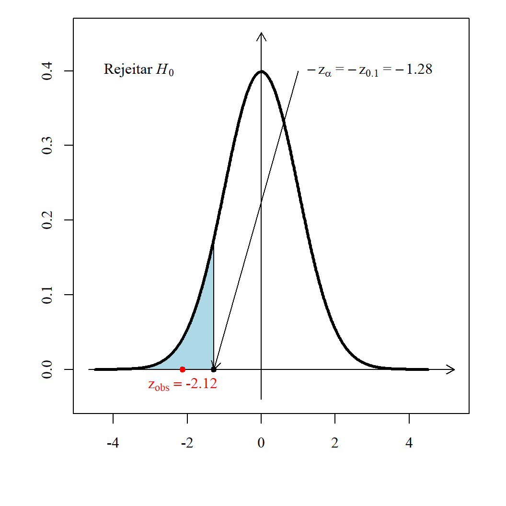
Exemplo 14 (cont.)
Suponha que a empresa tenha feito o teste com \(n=49\) e obteve \(\bar{x} = 9\) e \(s^2 = 10.89\). A região crítica é da forma \(\text{RC} = \{\bar{X} < x_c\}\), por meio da padronização podemos reescrevê-la como
| \(\text{RC} = \left\{\frac{\bar{X}-\mu_0}{S/\sqrt{n}} < \frac{x_c-\mu_0}{S/\sqrt{n}}\right\} \approx \{Z < -z_\alpha\}\), |
em que \(Z = \frac{\bar{X}-\mu_0}{S/\sqrt{n}}\) e \(z_\alpha\) é o valor tal que \(P(Z > z_\alpha) = \alpha\). Assim, a amostra resulta em um \(Z\) observado de \(Z_{\text{obs}} = \frac{9-10}{3.3/\sqrt{49}} \approx -2.12\).
As figuras ao lado mostram as regiões críticas do teste para diferentes níveis de significância \(\alpha\).
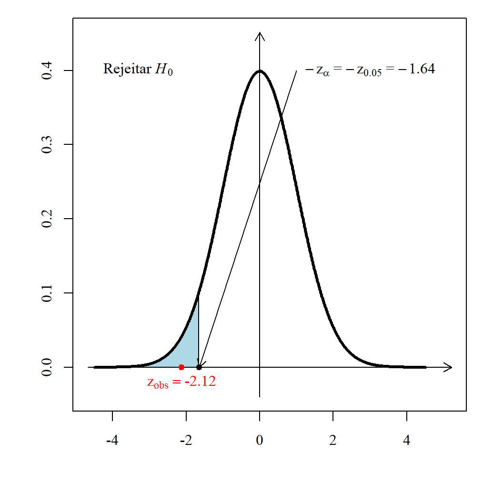
Exemplo 14 (cont.)
Suponha que a empresa tenha feito o teste com \(n=49\) e obteve \(\bar{x} = 9\) e \(s^2 = 10.89\). A região crítica é da forma \(\text{RC} = \{\bar{X} < x_c\}\), por meio da padronização podemos reescrevê-la como
| \(\text{RC} = \left\{\frac{\bar{X}-\mu_0}{S/\sqrt{n}} < \frac{x_c-\mu_0}{S/\sqrt{n}}\right\} \approx \{Z < -z_\alpha\}\), |
em que \(Z = \frac{\bar{X}-\mu_0}{S/\sqrt{n}}\) e \(z_\alpha\) é o valor tal que \(P(Z > z_\alpha) = \alpha\). Assim, a amostra resulta em um \(Z\) observado de \(Z_{\text{obs}} = \frac{9-10}{3.3/\sqrt{49}} \approx -2.12\).
As figuras ao lado mostram as regiões críticas do teste para diferentes níveis de significância \(\alpha\).
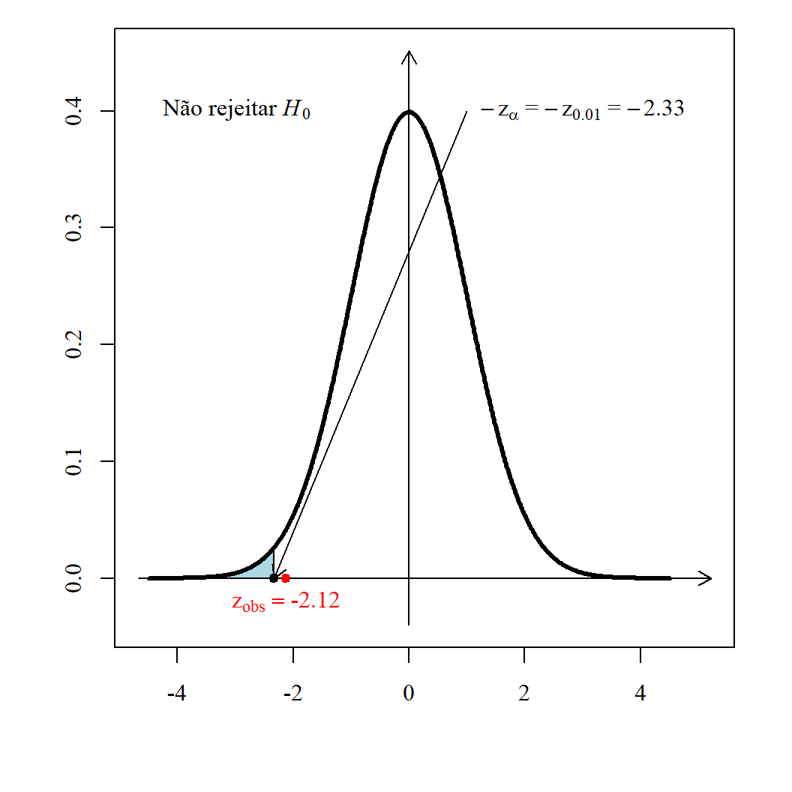
3.2 \(p\)-valor
Definição
O \(p\)-valor é o menor nível de significância em que \(H_0\) é rejeitada, quando um teste é usado em um determinado conjunto de dados.
Observação
Uma vez que o \(p\)-valor foi determinado, a conclusão no nível \(\alpha\), resulta da seguinte comparação: se \(p\)-valor \(\leq \alpha\) implica rejeição de \(H_0\) no nível \(\alpha\); se \(p\)-valor \(> \alpha\) implica não-rejeição de \(H_0\) no nível \(\alpha\).
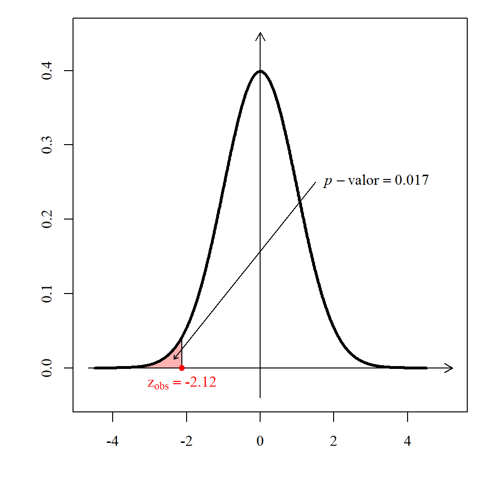
3.2 \(p\)-valor
Observações
- Nos testes para \(\mu\) em que usamos as estatísticas \(Z = \frac{\bar{X}-\mu_0}{\sigma/\sqrt{n}}\) (ou \(S\) no lugar de \(\sigma\) se \(n\) grande) e \(T = \frac{\bar{X}-\mu_0}{S/\sqrt{n}}\) (se \(n\) pequeno numa população normal), o cálculo do \(p\)-valor depende da forma de \(H_1\);
- No teste \(Z\), temos
\(p\)-valor \(= \begin{cases}1-\Phi(z_{\text{obs}}), & H_1 : \mu > \mu_0\\ \Phi(z_{\text{obs}}), & H_1 : \mu < \mu_0\\ 2[1-\Phi(|z_{\text{obs}}|)], & H_1 : \mu \neq \mu_0\end{cases}\); - No teste \(T\), temos
em que \(F_T(\cdot)\) é a fda da distribuição \(t\)-student com \(n-1\) graus de liberdade e \(t_{\text{obs}} = \frac{\bar{x}_{\text{obs}}-\mu_0}{s_{\text{obs}}/\sqrt{n}}\).\(p\)-valor \(= \begin{cases}1-F_T(t_{\text{obs}}), & H_1 : \mu > \mu_0\\ F_T(t_{\text{obs}}), & H_1 : \mu < \mu_0\\ 2[1-F_T(|t_{\text{obs}}|)], & H_1 : \mu \neq \mu_0\end{cases}\),
Declaração de uso de IA
Este material não tem conteúdo gerado por ferramentas de inteligência computacional.
Bibliografia
- CASELLA, George; BERGER, Roger L. Inferência estatística. São Paulo: Cengage Learning, 2011. xxxiii, 588 p.
- MORETTIN, Pedro Alberto; BUSSAB, Wilton de Oliveira. Estatística básica. 8. ed. São Paulo: Saraiva, 2013, 548 p.
- TRIOLA, Mario F. Introdução à estatística. 10. ed. Rio de Janeiro: LTC, 2008, 696 p.
- WALPOLE, Ronald E. et al. Probabilidade & estatística: para engenharia e ciências. 8. ed. São Paulo, SP: Pearson Prentice Hall, 2009. xiv, 491 p.
Política de Proteção aos Direitos Autorais
O conteúdo disponível consiste em material protegido pela legislação brasileira, sendo certo que, por ser o detentor dos direitos sobre o conteúdo disponível na plataforma, o LECON e o NEAEST detém direito exclusivo de usar, fruir e dispor de sua obra, conforme Artigo 5o, inciso XXVII, da Constituição Federal e os Artigos 7o e 28o, da Lei 9.610/98. A divulgação e/ou veiculação do conteúdo em sites diferentes à plataforma e sem a devida autorização do LECON e o NEAEST, pode configurar violação de direito autoral, nos termos da Lei 9.610/98, inclusive podendo caracterizar conduta criminosa, conforme Artigo 184o, §1o a 3o, do Código Penal. É considerada como contrafação a reprodução não autorizada, integral ou parcial, de todo e qualquer conteúdo disponível na plataforma.

Material elaborado pela equipe LECON: Alessandro J. Q. Sarnaglia, Bartolomeu Zamprogno, Fabio A. Fajardo, Luciana G. de Godoi e Nátaly A. J. Monroy.